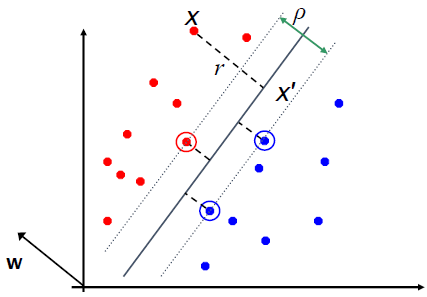
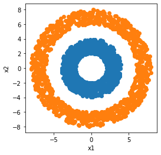

Basic formulation of SVM can only handle two classes.
There are improvised method to handle more than tow class.
The Maximum margin classifier is the linear classifier with the maximum margin. This is the simplest kind of SVM ( called an LSVM).
3 Estimate the Margin
The points those lies on the two margin lines are called support vector.
The model is immune to removal of any non-support-vector data points.
The equation of the line is given by \mathbf{W}^T \cdot \mathbf{X}+b=0

\mathbf{W} is always normal to the line \mathbf{W}^T \cdot \mathbf{X}+b=0 This can be proved by taking two vector \mathbf{X_1} and \mathbf{X_2} on line \mathbf{W}^T \cdot \mathbf{X}+b=0, Now if we subtract the two vector we get \mathbf{W}^T(\mathbf{X_1}-\mathbf{X_2})=\mathbf{0} \Leftrightarrow (\mathbf{X_1}-\mathbf{X_2}) \perp \mathbf{W}. The same is explained on stack overflow.
Dotted line \mathbf{X'-X} is perpendicular to decision boundary so parallel to \mathbf{W} let it’s length (magnitude) be r
The Unit vector along Dotted line \mathbf{X'-X} is given by \frac{\mathit{\mathbf{W}}}{\left\lVert \mathit{\mathbf{W}} \right\rVert }
The equation of the dotted line \mathbf{X'-X} can be also given by magnitude multiplied by unit vector : \displaystyle r\cdot \frac{ \mathit{\mathbf{W}}}{\left\lVert \mathit{\mathbf{W}} \right\rVert }
But as the dotted line can be on any side of the main line so we need to multiply with y, as y takes value of 1 or -1 depending on the side: \displaystyle \mathbf{X'-X} = yr\cdot \frac{ \mathit{\mathbf{W}}}{\left\lVert \mathit{\mathbf{W}} \right\rVert } \displaystyle \mathbf{X'} = \mathbf{X} - yr\cdot \frac{ \mathit{\mathbf{W}}}{\left\lVert \mathit{\mathbf{W}} \right\rVert }
Now since \mathbf{X'} lies on the line so we can write \mathbf{W}^T \cdot \mathbf{X'}+b=0
Substituting value of \mathbf{X'} in \mathbf{W}^T \cdot \mathbf{X'}+b=0 we get: \displaystyle \mathbf{W}^T \cdot \left( \mathbf{X} - yr\cdot \frac{ \mathit{\mathbf{W}}}{\left\lVert \mathit{\mathbf{W}} \right\rVert } \right)+b=0
\displaystyle r = \frac{\mathbf{W}^T \mathbf{X} +b}{y\cdot \left\lVert \mathit{\mathbf{W}} \right\rVert}
Since y takes value of only 1 or -1, hence we can bring y to numerator.
\displaystyle r = y \frac{\mathbf{W}^T \mathbf{X} +b}{\left\lVert \mathit{\mathbf{W}} \right\rVert}
Since \mathbf{W}^T \cdot \mathbf{X}+b=0 and c\left(\mathbf{W}^T \cdot \mathbf{X}\right)+b=0 define the same plane, we have the freedom to choose the normalization of \mathbf{W}
Let us choose normalization such that \mathbf{W}^T \cdot \mathbf{X}_+ + b = +1 and \mathbf{W}^T \cdot \mathbf{X}_- +b = -1 for the positive and negative support vectors respectively.
Margin between the two support vector is given by: \displaystyle \frac{2}{\left\lVert \mathbf{W}\right\rVert}
4 Maximize the Margin
Now we know the margin between the two support vector.
We need to maximize the margin in such a way that +1 class points lies on one side of the margin and -1 class points lies on the other side of the margin.
We can formulate this as the quadratic optimization problem: Find \mathbf{W} such that
\displaystyle \rho = \frac{2}{\left\lVert \mathbf{W}\right\rVert } is maximized; and for all \left\{ \left( \mathbf{X}_i,\mathbf{y}_i \right) \right\}
and \mathbf{W}^T \cdot \mathbf{X}_i+b \ge 1 if y_i=+1
and \mathbf{W}^T \cdot \mathbf{X}_i+b \le -1 if y_i=-1
A better formulation is to minimize inverse of \rho instead of maximizing it.
We know that \displaystyle \max \frac{2}{\left\lVert \mathbf{W}\right\rVert } =\min \frac{\left\lVert \mathbf{W}\right\rVert}{2} =\min\frac{\sqrt{ \mathbf{W}^T\mathbf{W}}}{2}
Instead of minimizing \displaystyle \frac {\left\lVert \mathbf{W}\right\rVert}{2} we minimize \displaystyle \frac {\left\lVert \mathbf{W}\right\rVert^2}{2} = \displaystyle \frac{ \mathbf{W}^T\mathbf{W}}{2} as both (with or without square) are equivalent. we select square one as math (derivative) becomes easy.
Tip
Maximization problem can be written in terms of minimization as follows:
Find \mathbf{W} and b such that
\displaystyle \frac{\mathbf{W}^T\mathbf{W}}{2} is minimized.
and for all \left\{ \left( \mathbf{X}_i,\mathbf{y}_i \right) \right\} : \displaystyle y_i\left( \mathbf{W}^T\mathbf{X}_i +b\right) \ge 1
5 Using Lagrange Multipliers
5.1 Basics of Lagrange Multipliers
Optimization problem: Minimize : \displaystyle f\left( \overrightarrow{x} \right) Such that for all i,\displaystyle g_i\left( \overrightarrow{x} \right)\le 0
To solve the above problem we create augmented Lagrange function:
Observation: For any feasible x and all \lambda_i \ge 0,
\displaystyle L\left( \overrightarrow{x},\overrightarrow{\lambda} \right):=f\left( \overrightarrow{x} \right)+\overbrace{\sum_{i=1}^{n}\overbrace{\lambda_i}^{\text{this is positve}} \underbrace{g_i\left( \overrightarrow{x} \right)}_{\text{this is negative}}}^{\text{This is negative}}
We can see that now problem becomes unconstrained in x Also p^* is called The primal problem
Observation: consider a function: \displaystyle \min_{\overrightarrow{x} } L\left( \overrightarrow{x},\overrightarrow{\lambda} \right) Since p^* is solution for maximum possible \lambda so for any feasible x and all \lambda_i \ge 0
We can solve for optimal w, b as function of \alpha
\displaystyle \frac{\partial L }{\partial \overrightarrow{w}}= w - \sum_{i}\alpha_iy_i\overrightarrow{x}_i=0 \Rightarrow w = \sum_{i}\alpha_iy_i\overrightarrow{x}_i
\displaystyle \frac{\partial L }{\partial b}= \sum_{i}\alpha_iy_i=0 \Rightarrow \sum_{i}\alpha_iy_i =0
Same as Hard margin SVM we use KKT condition and solve minimization of dual:
\displaystyle \frac{\partial L }{\partial \overrightarrow{w}}= w - \sum_{i}\alpha_iy_i\overrightarrow{x}_i=0 \Rightarrow w = \sum_{i}\alpha_iy_i\overrightarrow{x}_i
\displaystyle \frac{\partial L }{\partial b}= \sum_{i}\alpha_iy_i=0 \Rightarrow \sum_{i}\alpha_iy_i =0
\displaystyle \frac{\partial L }{\partial \varepsilon _i}= c -\alpha_i - \beta_i = 0\Rightarrow c=\beta_i+\alpha_i
Observation:
\overbrace{c}^{\text{Upper bound of }\alpha \text{ and }\beta} =\underbrace{\beta_i}_{\text{always +ve}} +\underbrace{\alpha_i}_{\text{always +ve}}
0 \le \alpha_k \le c, and \forall k ,\displaystyle \sum_{k=1}^{R}\alpha_ky_k=0
Note
One of the constraint of soft margin SVM is 0 \le \alpha_k \le c which is different for hard margin SVM constraint \alpha_k \ge 0
7 Multi-class Classification with SVMs
SVM can handle only tow-class outputs.
what to do for multi-class case:
one vs all SVM
Learn N SVMs
SVM 1 learns class 1 vs not class 1
SVM 2 learns class 2 vs not class 2 and so on.
Then to predict the output for a new point, just predict with each SVM and fond out which one puts the prediction the furthest into the positive region.
Other approaches:
pair-wise SVM
Tree-structured SVM
8 Kernel Trick
8.1 Why do we require the Kernel Trick
We found that after solving minimization problem of dual of SVM we get following: \displaystyle \max \sum_{k = 1}^{R}\alpha_k - \frac{1}{2}\sum_{k=1}^{R}\sum_{l = 1}^{R}\alpha_k \alpha_l Q_{kl}, where \displaystyle Q_{kl} =y_ky_l\left( \mathbf{X_k}\cdot \mathbf{X_l} \right)
subject to constrains:
0 \le \alpha_k \le c, and \forall k ,\displaystyle \sum_{k=1}^{R}\alpha_ky_k=0
But if the data can’t be separated linearly we transform the data to higher dimension space using the transformation \phi. So that the data can be separated using a hyper-plane in higher dimension space. In that case the above equation changes as below : \displaystyle \max \sum_{k = 1}^{R}\alpha_k - \frac{1}{2}\sum_{k=1}^{R}\sum_{l = 1}^{R}\alpha_k \alpha_l Q_{kl}, where \displaystyle Q_{kl} =y_ky_l \underbrace{\left(\mathbf{\Phi} \left( \mathbf{X}_k \right)\cdot \mathbf{\Phi} \left( \mathbf{X}_l \right)\right)}_{\text{Notice the term } \Phi }
subject to constrains:
0 \le \alpha_k \le c, and \forall k ,\displaystyle \sum_{k=1}^{R}\alpha_ky_k=0
Then classify with \displaystyle f(\mathbf{X},w,b)=\mathrm{sign}\left( \mathbf{W} \cdot \mathbf{\Phi}(\mathbf{X})+b \right)
Most important change : \mathbf{X} \rightarrow \mathbf{\Phi}(\mathbf{X})
Notice that in the term \displaystyle Q_{kl} =y_ky_l \left(\mathbf{\Phi} \left( \mathbf{X}_k \right)\cdot \mathbf{\Phi} \left( \mathbf{X}_l \right)\right) we must do \frac{R^2}{2} dot products to get this matrix ready.
Assuming a quadratic polynomial kernel, each dot product requires \frac{m^2}{2} addition and multiplication ( where m is the dimension of X)
The whole thing costs \frac{R^2m^2}{4}
This is the reason we require a trick so that we need not do this large computation.
8.2 How do we do the kernel Trick
To understand we create a data in circular fashion as shown below:
Code
import matplotlib.pyplot as pltimport numpy as npimport randomimport mathdef get_points(rl,rh): npoints =1000# points to chose from r = np.random.uniform(low=rl, high=rh, size=npoints) t = np.linspace(0, 2*np.pi, npoints, endpoint=False) x = r * np.cos(t) y = r * np.sin(t)return x,yfig = plt.figure(figsize=(4,4))x11,x21=get_points(2,4)plt.scatter(x11,x21);x12,x22=get_points(6,8)plt.scatter(x12,x22);plt.xlabel('x1')plt.ylabel('x2');

The two circle can’t be separated by a line.
Now we transform the data to 3 dimension using below function.
From above figure we can see that we get exact same result in original domain without transforming data to the higher dimensional space
Not all functions are kernel functions.
Need to be decomposable: K(a,b)=\phi(a)\cdot \phi(b)
Mercer’s condition : To expand kernel function K(X,Y) into a dot product, i.e. K(x,y)=\Phi(x).\Phi(y), K(x,y) has to be positive semi-definite function, i.e., for any function f(X) whose \displaystyle \int f^2(x)dx is finite, the following inequality holds: \displaystyle \int dx dy f(x) K(x,y) f(y) \ge 0
It is not easy to select the kernel function which will work best for the given data.
RBF kernels are considered good in general, especially for images (and other smooth functions/data).
For discrete data, chi-square kernel is preferred.
we can also do Multiple Kernel learning.
If still it doesn’t work we can use cross-validation to select a kernel function from some basic options.
Same kernel trick can also be applied to other methods including:
Kernel k-NN
Kernel Perceptron
Kernelized Linear Regression
etc.
\tiny {\textcolor{#808080}{\boxed{\text{Reference: Dr. Vineeth, IIT Hyderabad }}}}